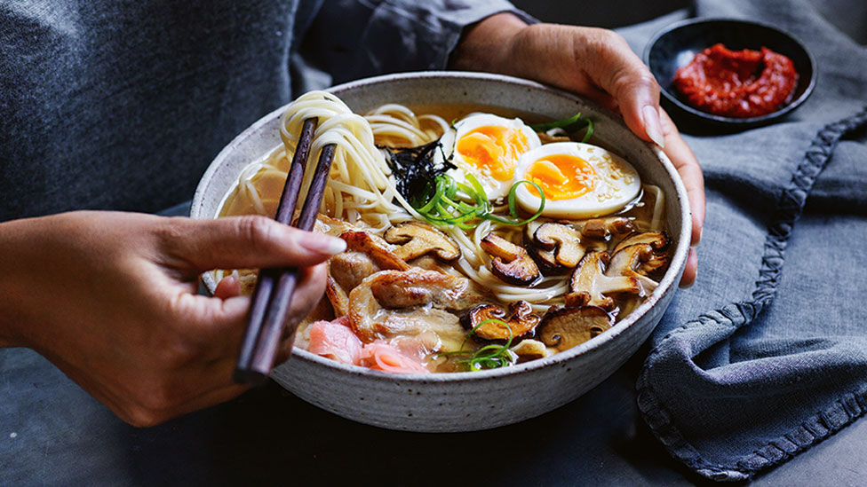

Ready to eat in just 15 minutes, this cheat’s ramen is the perfect noodle soup for those busy weeknights.
Combine the stock, miso, soy sauce and 2 cups (500ml) water in a medium saucepan over medium heat. Cook, stirring, for 2 mins or until the mixture comes to a simmer.
Meanwhile, cook the noodles in a saucepan of boiling water following packet directions. Refresh under cold water. Drain.
Spray a large non-stick frying pan with olive oil spray. Place over high heat. Add the pork and cook for 2 mins each side or until golden brown. Transfer to a plate and cover with foil to keep warm. Add the mushroom and cook, stirring, for 1-2 mins or until golden.
Divide noodles, pork and mushroom among serving bowls. Ladle over the soup. Top with the egg and sprinkle with spring onion, ginger and nori.
Serve with chilli paste and toasted sesame seeds
Home